Larice
46°30′12″ N · 11°51′04″ E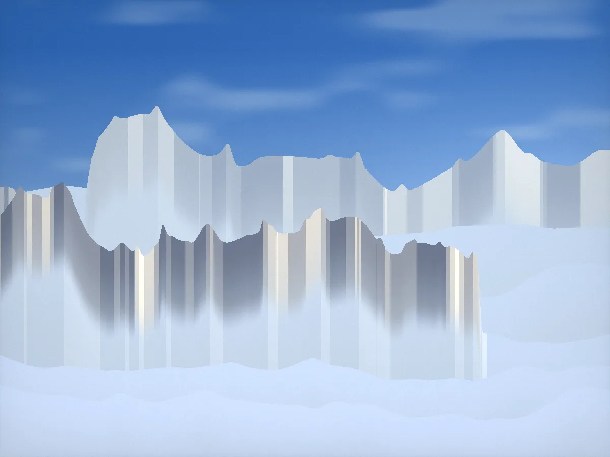
La più luminosa: letto basso davanti alla vetrata, legno di larice chiaro, una poltrona per guardare il meteo cambiare.
- Superficie
- Ospiti
- Vista
- Da / notte
- 38 m²
- 2
- Torri
- € 690
Nove suite sopra la nebbia, a 2.212 metri, dove finisce la cabinovia.
Il rifugio, a ogni ora
L'ultimo rifugio
Sopra la nebbia il tempo rallenta. Nove suite, una cucina, nessuna strada: si sale con la cabinovia e si resta finché la montagna lo concede.
Da dicembre ad aprile il rifugio vive di neve e di silenzio. Da giugno a ottobre di creste, laghi e cene lunghe sul terrazzo. Al massimo diciotto ospiti, una guida alpina sempre in casa.
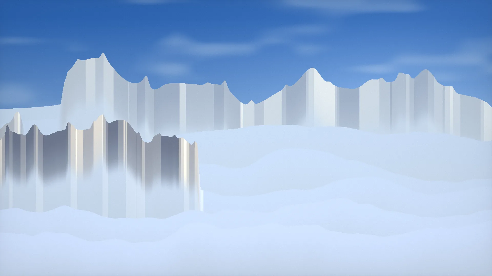
Ogni giornata si decide la sera prima, con la guida.
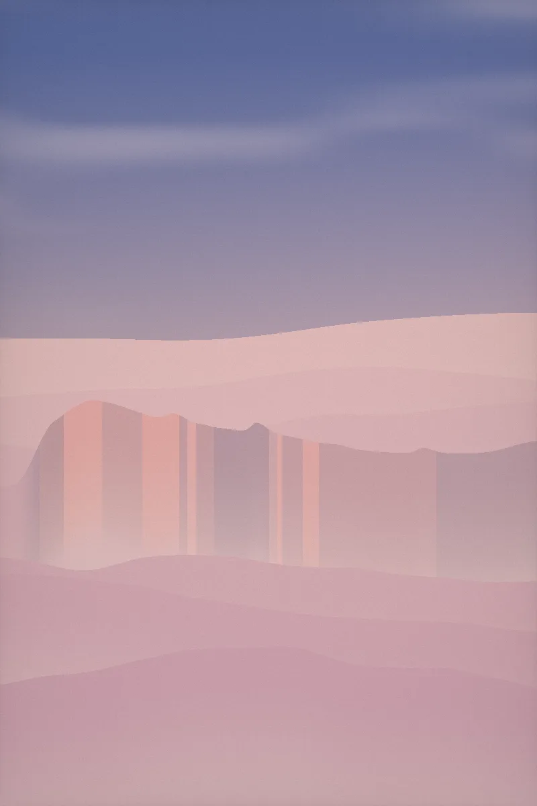
01Scialpinismo all'albaSi parte col buio e si arriva in cresta quando il sole accende le pareti di rosa. Con la guida, per ogni livello.
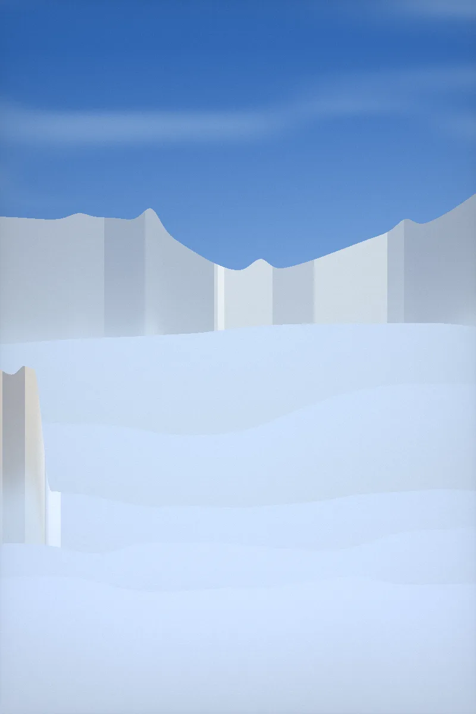
02La traversata delle TorriUna giornata intera tra le guglie, su sentiero e ferrata facile. Pranzo al sacco preparato dalla cucina.
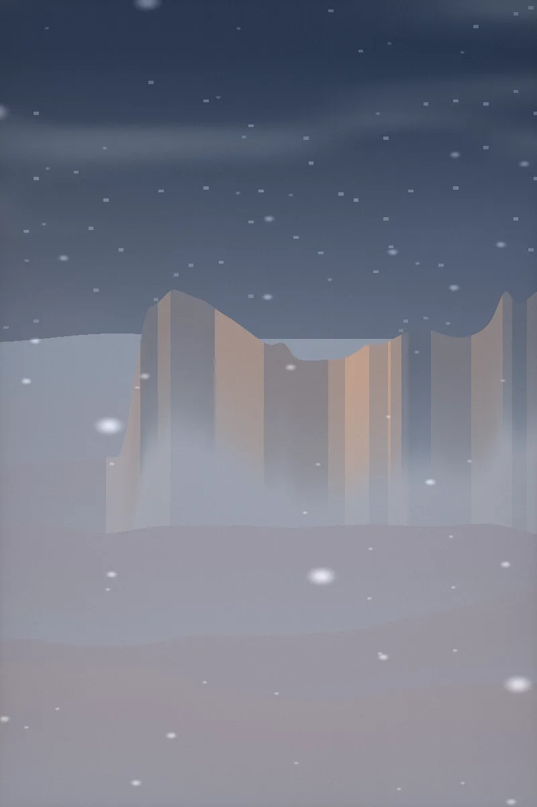
03Sauna nel lariceUna botte di larice sul bordo del pendio, la neve per rinfrescarsi e la valle sotto i piedi.
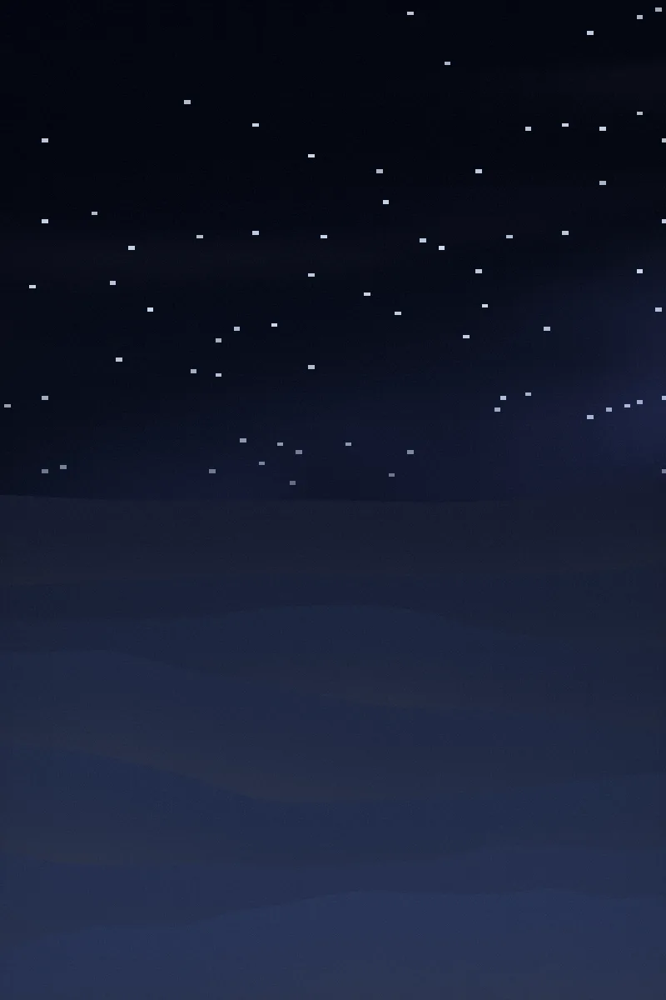
04Notte senza luciIl rifugio spegne tutto alle undici. Telescopio, coperte di loden e un tè caldo sul terrazzo.
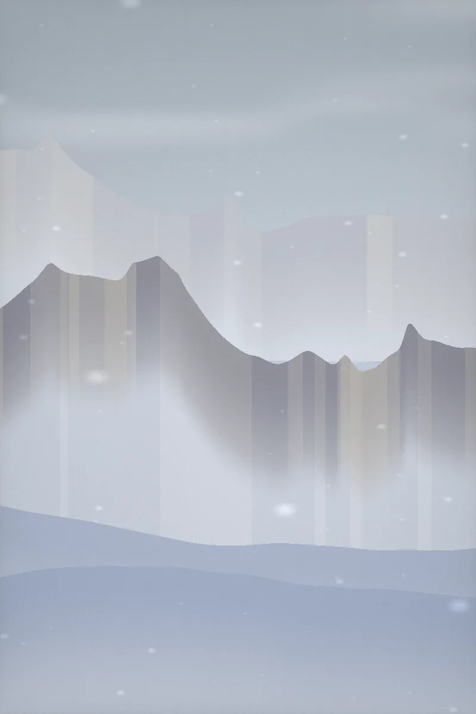
05Giornata biancaQuando sale la nebbia non si esce: libri, camino acceso e la cucina aperta tutto il giorno.
“Abbiamo costruito Sassòra dove finisce la strada, perché lì comincia l'ascolto. Qui nessuno ha un programma: c'è una finestra, una guida e tutto il tempo.”
Marta e Ilario, custodi del rifugio
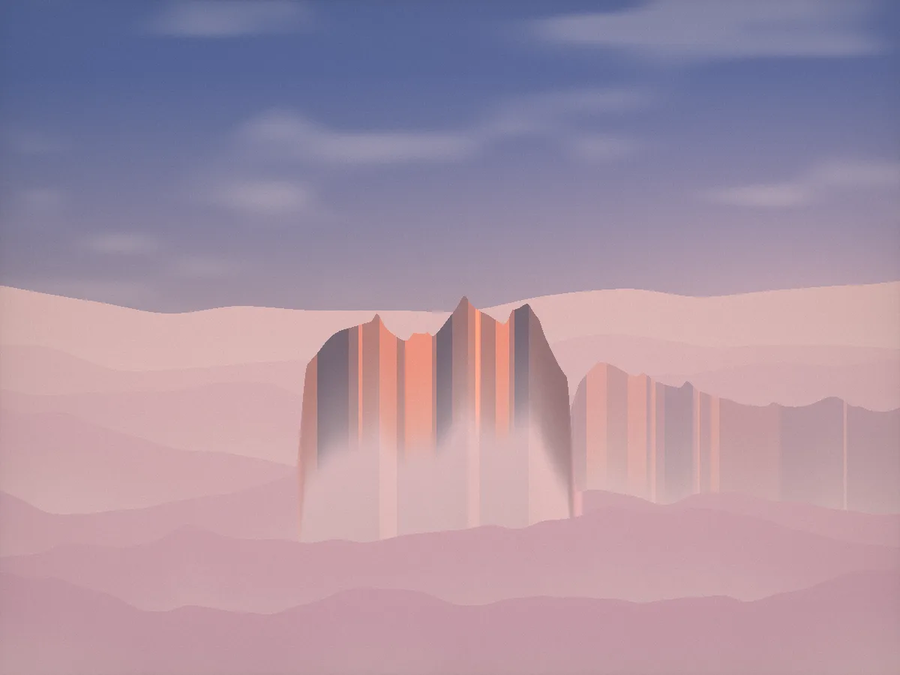
Larice e cirmolo, finestre grandi quanto la parete, nessuna televisione. Mezza pensione e sauna sempre incluse.

La più luminosa: letto basso davanti alla vetrata, legno di larice chiaro, una poltrona per guardare il meteo cambiare.
Rivestita di pino cembro, che profuma per anni. Vasca in pietra accanto alla finestra d'angolo, rivolta a est.
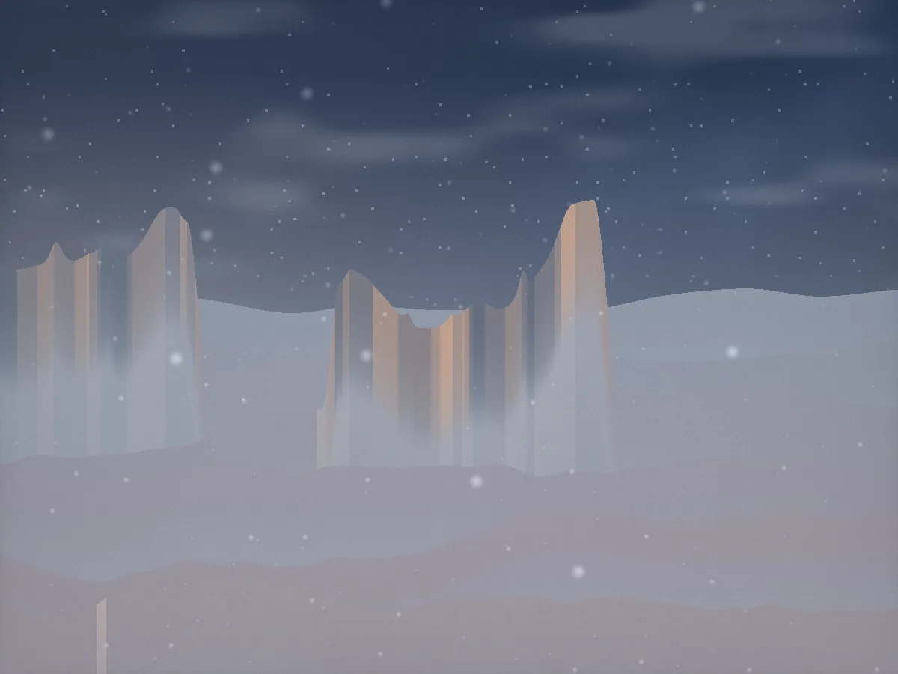
Su due livelli, con un terrazzo privato scavato nella roccia. Pensata per due adulti e due bambini.
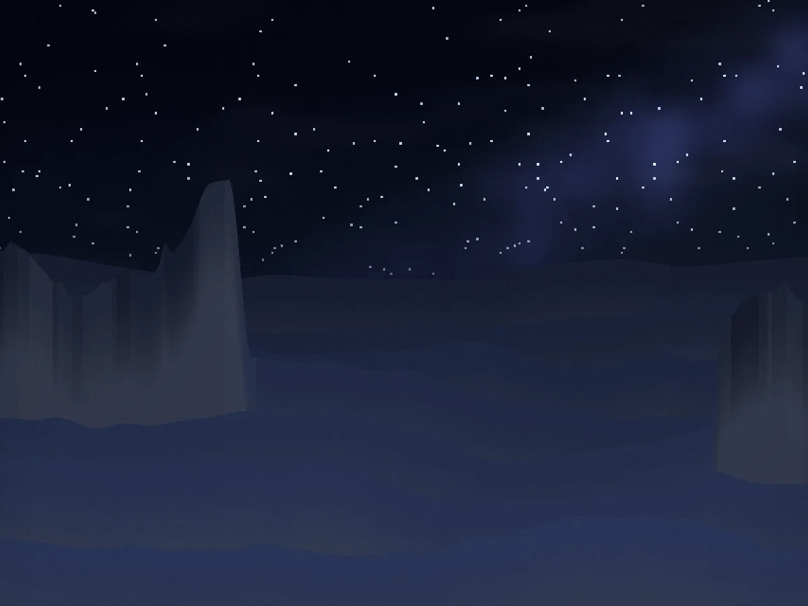
Una casa a parte, cento passi oltre il rifugio: camino, sauna privata, colazione portata a mano.
Indica le date: ti rispondiamo noi, con la disponibilità e l'orario dell'ultima cabinovia. Il prezzo comprende mezza pensione, sauna e una salita con la guida.
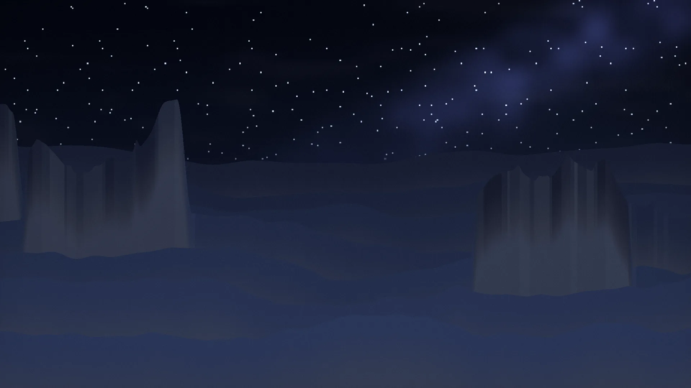
Da Bolzano un'ora d'auto, poi dodici minuti di cabinovia. Il resto lo fa la montagna.
BZ — 2.212